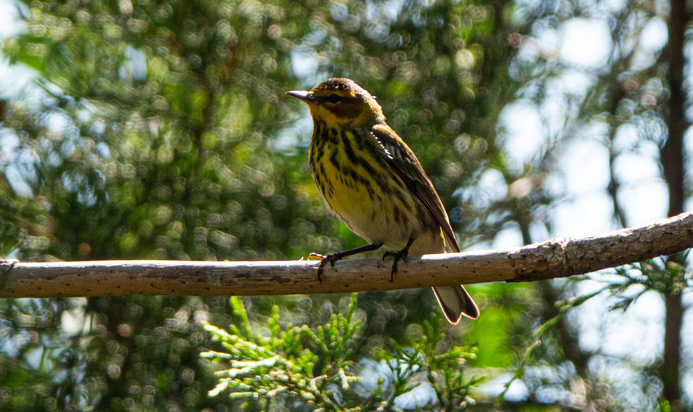

- Named for Cape May, New Jersey, where one specimen was collected in 1812 — and then not seen there again for over 100 years. The species breeds far to the north and merely passes through on migration.
- The only warbler in the world with a tubular, semitubular tongue — an adaptation that lets it sip nectar from flowers and pierce fruit for juice, almost like a tiny hummingbird.
- Its scientific name tigrina means tiger-striped in Latin, and the bold black streaks blazing across the male's yellow breast make that name instantly apt.
- Population size swings dramatically with outbreaks of the spruce budworm: in boom years the Cape May lays up to 9 eggs per clutch — the largest clutch of any New World warbler.
Vivid yellow underparts blazed with dense black streaking — the tiger stripes that inspired the species name tigrina. Face shows a rich chestnut-orange ear patch framed in bright yellow, a black eyestripe, and a yellow collar. Large white wing patch and yellowish rump are visible at rest and in flight. Bill is slender and distinctively decurved at the tip.
Considerably duller overall — olive-gray above, pale yellowish below with narrow gray streaking. The chestnut cheek is replaced by a grayish-olive wash. The yellowish rump and at least a hint of the pale neck patch are present in all plumages and all ages, making them the most reliable field marks for dull birds.
Fall immatures can resemble Yellow-rumped or Palm Warblers. The Cape May's streaking extends across the full breast and along the sides (not just the flanks), the tail is noticeably short, the bill is decurved, and it lacks the constantly pumping tail of the Palm Warbler. The yellowish rump patch is present but duller than the Yellow-rumped Warbler's vivid yellow rump spots.
Song is a thin, very high-pitched series of identical notes on a single pitch, often described as seet-seet-seet-seet, typically delivered from the canopy. The call is a soft, thin sip. Because the song sits at such high frequencies, it is sometimes missed by observers with age-related hearing loss. The song closely resembles that of the Bay-breasted Warbler and requires experience to separate.
In spring migration (April into early May), focus on the male's showstopper combination: tiger-striped yellow breast and a rich chestnut-orange cheek patch framed in bright yellow — there is nothing else like it among Florida warblers. In fall and winter (October through March), the birds are much duller; shift your search image to the yellow-green rump patch and a faint pale neck patch, which remain reliable across all ages and plumages. At any season, note the silhouette: the tail is noticeably short for a warbler, and the slender bill curves slightly downward at the tip — a distinctive combination that holds up even when plumage offers few clues.
On the breeding grounds, insects dominate — especially spruce budworm caterpillars, which may form half the diet or more, along with beetles, leafhoppers, ants, bees, wasps, and spiders. During migration and winter the diet shifts substantially: the bird uses its uniquely tubular tongue to sip flower nectar and pierce fruit for juice. In Florida it may visit gardens with blooming plants and has been recorded at hummingbird feeders.
Scan the canopy and upper mid-story, especially any conifers or flowering trees on the park grounds. During fall migration look at branch tips where it gleans insects. In winter or late spring it may visit nectar-rich flowering plants, including bottlebrush or native wildflowers, and has been known to find hummingbird feeders.
Present in Florida primarily as a passage migrant and occasional winter visitor, roughly October through April. Spring passage (April into early May) can be especially rewarding as males are in full tiger-striped breeding plumage. Most active and visible during daylight hours while foraging in the canopy; the birds migrate at night. Reliability varies year to year with budworm outbreak cycles that affect overall population size.
Observe and enjoy from a respectful distance. Cape May Warblers forage high in the canopy, so tracking one can quickly lead to warbler neck — stay on established pathways so you can safely keep your eyes on the treetops. If you spot one lower down near a flowering plant such as bottlebrush or a native wildflower, give it plenty of space: these birds are surprisingly territorial over nectar sources and may be actively defending that flower against hummingbirds and other visitors.


- © Rob Carr (CC-BY-NC), via iNaturalist